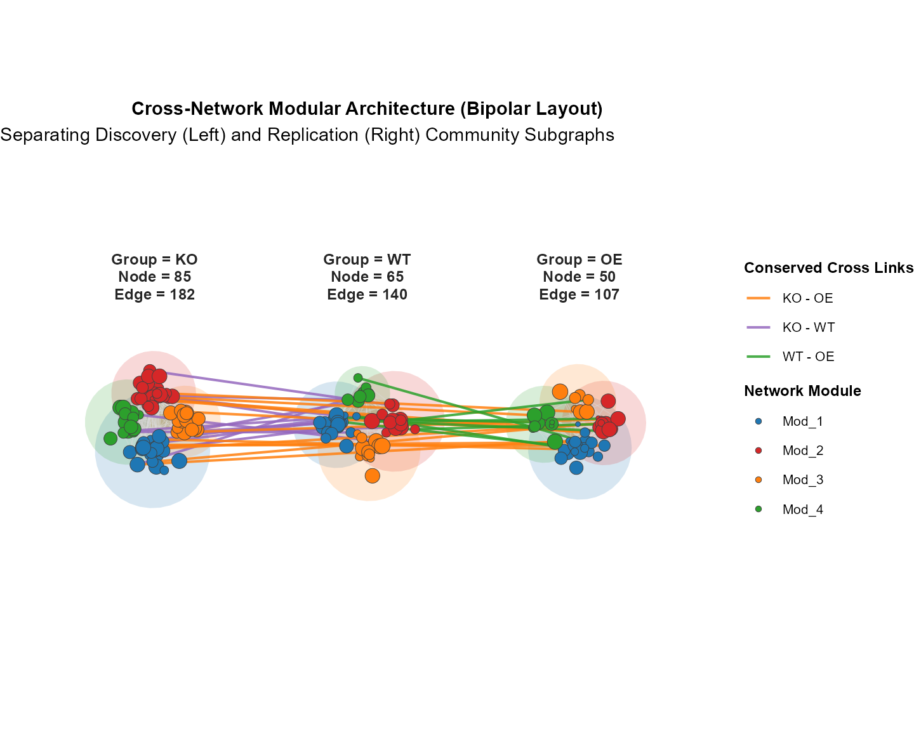
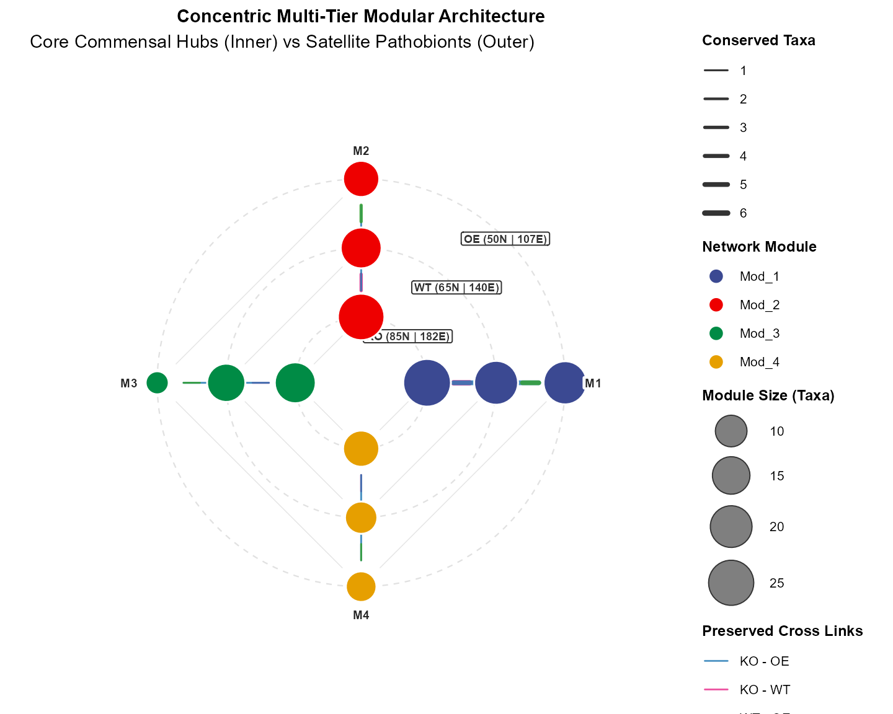
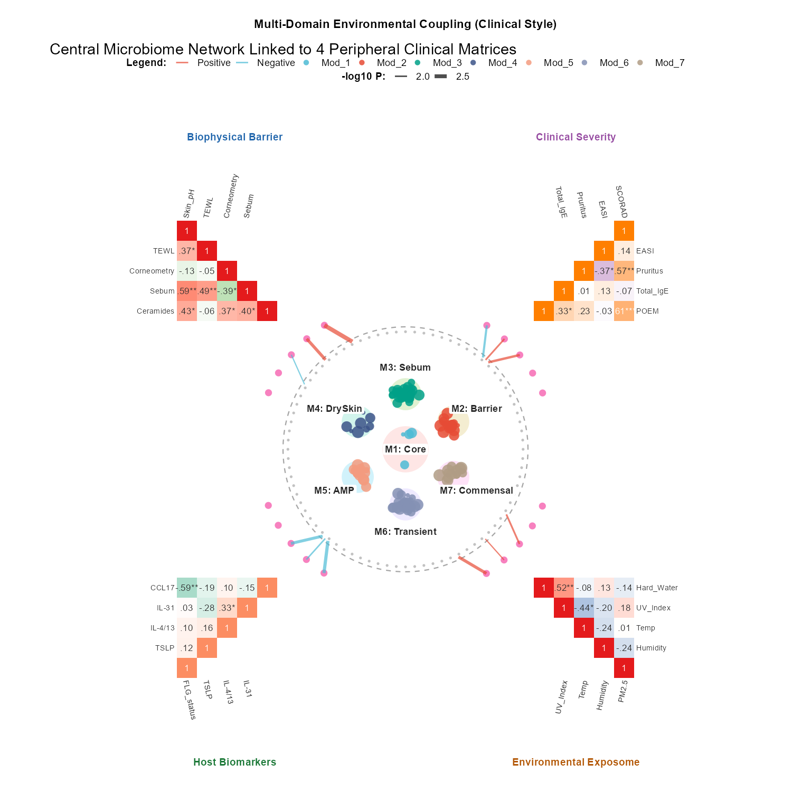
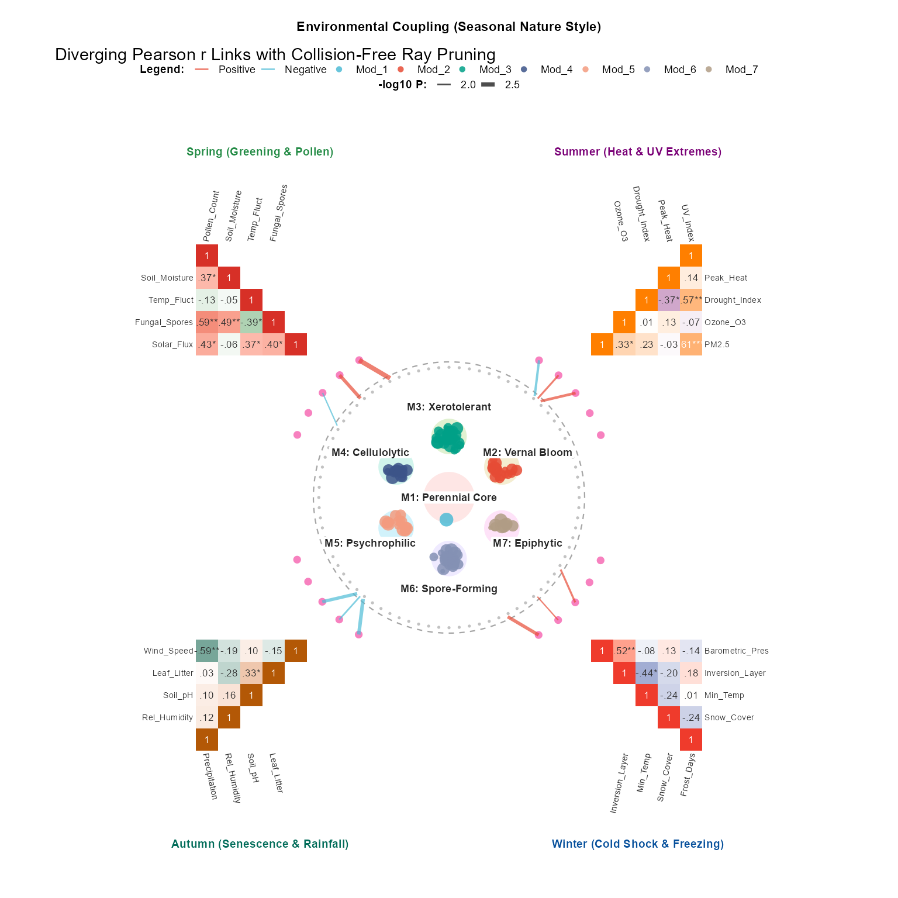
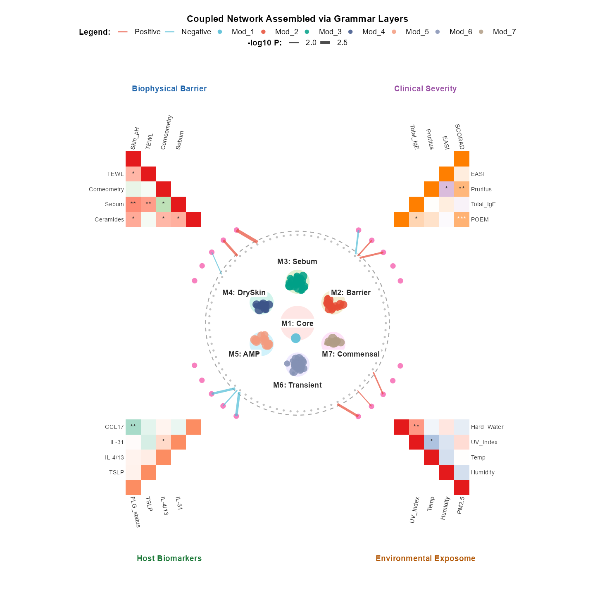
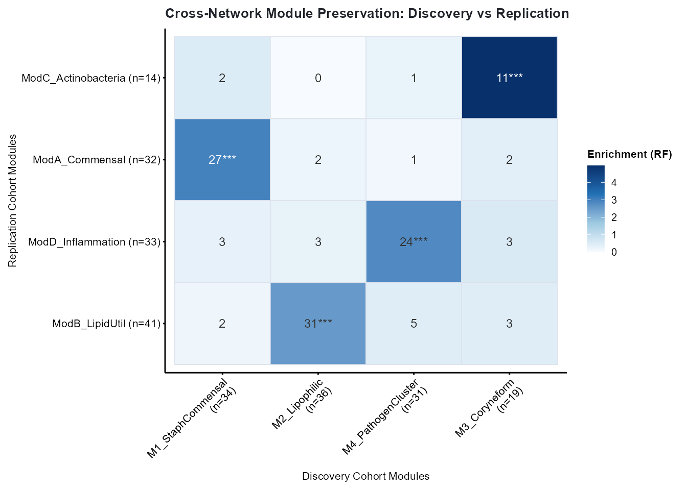
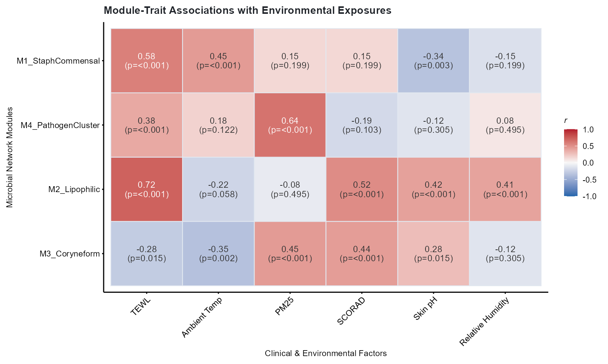
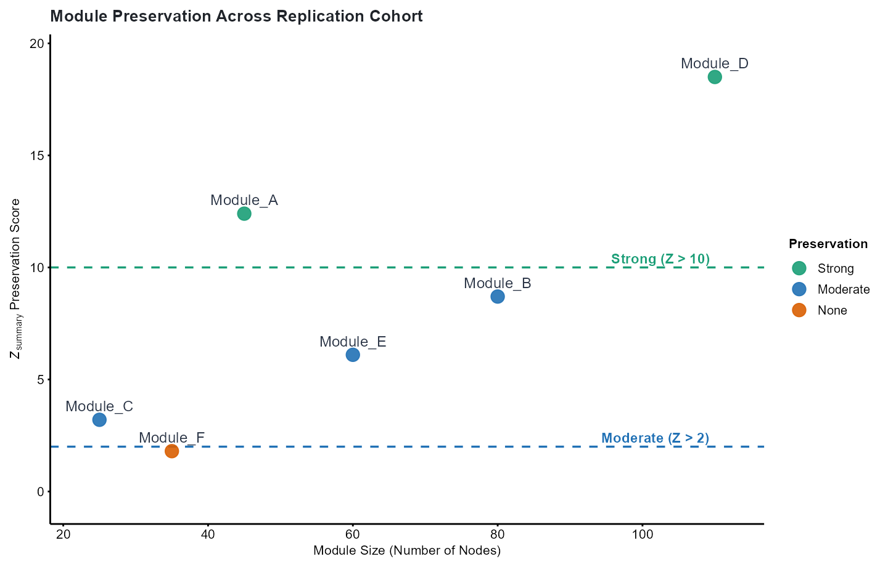
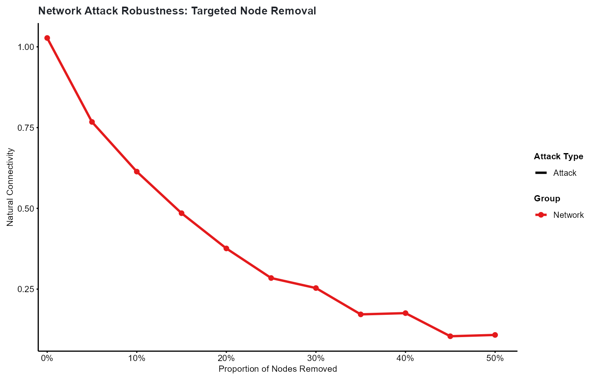

Coupled Environmental Networks and Multi-Network Architectures
Lucas VHH Tran
2026-11-24
Source:vignettes/coupled-networks.Rmd
coupled-networks.RmdOverview
In microbiome research, systems immunology, and molecular ecology,
evaluating community organization requires moving beyond isolated
correlation matrices. cliomicplot provides an integrated
architecture for:
-
Cross-Condition Network Graphs
(
cliplot_cross_network_graph()): Visualizing multi-group modular topology across 8 journal-styled layouts (concentric,bipolar,science,ring, etc.). -
Coupled Environmental Networks
(
cliplot_env_network()): Coupling a central microbial co-occurrence network with 1 to 4 peripheral multi-domain environmental and clinical correlation heatmaps. -
Layered Grammar of Graphics: S3 grammar primitives
(
geom_env_boundary(),geom_env_central_network(),geom_env_corner_heatmaps(),geom_env_links(),coord_env_network()) enabling step-by-step layer composition. -
Statistical Cross-Network Validation:
Hypergeometric module overlap (
type_module_compare()), module-trait heatmaps (type_module_trait()), permutation null models (cli_network_permutation()), Mantel tests (cli_mantel()), and targeted attack robustness (cli_network_robustness()).
1. Cross-Condition Network Topology
Co-occurrence networks constructed across disease states (e.g., Healthy Control vs. Lesional Disease) require spatial separation that maintains readability while highlighting shared vs. condition-specific edges.
cliplot_cross_network_graph() provides topological
layout algorithms designed for publication figures:
demo_net <- generate_demo_cross_network()
p_node <- cliplot_cross_network_graph(
nodes = demo_net$nodes,
edges = demo_net$edges,
cross_edges = demo_net$cross_edges,
level = "node",
style = "bipolar",
preset = "nature",
scifig = TRUE,
title = "Cross-Network Modular Architecture (Bipolar Layout)"
) +
labs(subtitle = "Separating Discovery (Left) and Replication (Right) Community Subgraphs")
p_node
Topological Layout Styles
cliomicplot supports four primary topological
styles:
-
style = "bipolar": Positions two condition networks on opposing bilateral poles (e.g. left and right hemispheres) with inter-condition bridging links across the center. -
style = "concentric": Positions a core hub module in an inner circle and peripheral satellite modules in an outer concentric ring. -
style = "science": Science-journal jewel styling with high-contrast saturated nodes, darkened backgrounds, and stroke-width weighting by degree centrality. -
style = "ring": Equal-spaced modular clusters arranged along a circular orbit.
p_concentric <- cliplot_cross_network_graph(
nodes = demo_net$nodes,
edges = demo_net$edges,
cross_edges = demo_net$cross_edges,
level = "node",
style = "concentric",
preset = "science",
scifig = TRUE,
title = "Concentric Multi-Tier Modular Architecture"
) +
labs(subtitle = "Core Commensal Hubs (Inner) vs Satellite Pathobionts (Outer)")
p_concentric
2. Central Networks Coupled with Multi-Domain Environmental Heatmaps
Microbial communities exist in complex physical and clinical
environments. cliplot_env_network() couples a central
circular co-occurrence network with 1 to 4 peripheral multi-domain
environmental correlation heatmaps on a unified continuous coordinate
plane
():
p_env_clinical <- cliplot_env_network(
title = "Multi-Domain Environmental Coupling (Clinical Style)",
show_values = TRUE,
show_domain_labels = TRUE,
compact = TRUE,
preset = "clinical",
scifig = TRUE
) +
labs(subtitle = "Central Microbiome Network Linked to 4 Peripheral Clinical Matrices")
p_env_clinical
Multi-Domain Four-Corner Canvas
The four corner heatmaps represent independent multi-omics or exposome measurement domains:
- Top-Left (Corner 1): Biophysical barrier function (e.g. TEWL, stratum corneum hydration, skin surface pH).
- Top-Right (Corner 2): Micro-climate exposures (e.g. ambient temperature, particulate matter , relative humidity).
- Bottom-Right (Corner 3): Clinical severity indices (e.g. SCORAD, EASI, pruritus visual analog scale).
- Bottom-Left (Corner 4): Host immune mediators (e.g. serum IgE, IL-4/IL-13 cytokines, antimicrobial peptides).
p_env_seasonal <- cliplot_env_network(
title = "Environmental Coupling (Seasonal Nature Style)",
show_values = TRUE,
show_domain_labels = TRUE,
compact = TRUE,
preset = "seasonal",
scifig = TRUE
) +
labs(subtitle = "Diverging Pearson r Links with Collision-Free Ray Pruning")
p_env_seasonal
3. Layered Grammar of Graphics for Coupled Networks
cliomicplot provides a layered grammar of graphics for
coupled environmental networks:
-
cli_env_network_data(): Constructor assembling nodes, edges, corner heatmaps, and inter-domain links into an S3 data object. -
geom_env_boundary(): Boundary rings separating network modules. -
geom_env_central_network(): Circular co-occurrence network with module arcs and intra-module edges. -
geom_env_corner_heatmaps(): Peripheral multi-domain correlation heatmaps. -
geom_env_links(): Curvature-controlled connecting links with collision pruning. -
coord_env_network(): Cartesian coordinate system fixed to the standard canvas. -
theme_env_network(): Zero-margin canvas theme eliminating axes and grids.
# 1. Build environment network data object
net_data <- cli_env_network_data(preset = "nature", compact = TRUE)
# 2. Layer-by-layer ggplot2 assembly
p_layered <- ggplot() +
geom_env_boundary(data = net_data) +
geom_env_central_network(data = net_data) +
geom_env_corner_heatmaps(data = net_data) +
geom_env_links(data = net_data) +
coord_env_network() +
theme_env_network() +
labs(title = "Coupled Network Assembled via Grammar Layers")
p_layered
4. Cross-Network Module Overlap Comparison
When validating networks across independent cohorts,
type_module_compare() tests whether discrete modules
identified in discovery remain preserved in validation cohorts:
set.seed(42)
taxa_pool <- paste0("Taxon_", 1:120)
net_discovery <- sample(c("M1_StaphCommensal", "M2_Lipophilic", "M3_Coryneform", "M4_PathogenCluster"), 120, replace = TRUE)
net_replication <- net_discovery
# Reorganize 30% of taxa to simulate biological perturbation
perm_idx <- sample(1:120, 36)
net_replication[perm_idx] <- sample(c("ModA_Commensal", "ModB_LipidUtil", "ModC_Actinobacteria", "ModD_Inflammation"), 36, replace = TRUE)
net_replication[-perm_idx] <- gsub("M1_StaphCommensal", "ModA_Commensal", net_replication[-perm_idx])
net_replication[-perm_idx] <- gsub("M2_Lipophilic", "ModB_LipidUtil", net_replication[-perm_idx])
net_replication[-perm_idx] <- gsub("M3_Coryneform", "ModC_Actinobacteria", net_replication[-perm_idx])
net_replication[-perm_idx] <- gsub("M4_PathogenCluster", "ModD_Inflammation", net_replication[-perm_idx])
network_df <- data.frame(
Taxon = taxa_pool,
Discovery = net_discovery,
Replication = net_replication,
stringsAsFactors = FALSE
)
p_overlap <- cliplot(
Replication ~ Discovery,
data = network_df,
type = type_module_compare(
fill_by = "rf",
show_stars = TRUE,
show_totals = TRUE
),
preset = "nature",
title = "Cross-Network Module Preservation: Discovery vs Replication",
xlab = "Discovery Cohort Modules",
ylab = "Replication Cohort Modules"
)
p_overlap
5. Module-Trait Clinical Association Heatmap
type_module_trait() computes correlation coefficients
and two-sided p-values between module eigengenes and patient phenotypic
measurements:
cor_env_df <- expand.grid(
Module = c("M1_StaphCommensal", "M2_Lipophilic", "M3_Coryneform", "M4_PathogenCluster"),
Factor = c("Skin pH", "TEWL", "PM25", "Ambient Temp", "Relative Humidity", "SCORAD"),
stringsAsFactors = FALSE
)
cor_env_df$cor <- c(
-0.34, 0.42, 0.28, -0.12, 0.58, 0.72,
-0.28, 0.38, 0.15, -0.08, 0.45, 0.64,
0.45, -0.22, -0.35, 0.18, -0.15, 0.41,
-0.12, 0.08, 0.15, 0.52, 0.44, -0.19
)
n_samples <- 75
t_stat <- cor_env_df$cor * sqrt((n_samples - 2) / (1 - cor_env_df$cor^2))
cor_env_df$pvalue <- 2 * stats::pt(-abs(t_stat), df = n_samples - 2)
p_trait <- cliplot(
Module ~ Factor,
data = cor_env_df,
type = type_module_trait(
show_labels = "both",
cluster_modules = TRUE,
cluster_env = TRUE,
sig_digits = 2
),
title = "Module-Trait Associations with Environmental Exposures",
xlab = "Clinical & Environmental Factors",
ylab = "Microbial Network Modules"
)
p_trait
6. Preservation Statistics and Network Attack Robustness
Module Preservation Statistics:
cli_module_preservation()
set.seed(42)
n_mods <- 6
mod_names <- paste0("Module_", LETTERS[1:n_mods])
mod_sizes <- c(45, 80, 25, 110, 60, 35)
z_scores <- c(12.4, 8.7, 3.2, 18.5, 6.1, 1.8)
pres_df <- data.frame(
module = mod_names,
size = mod_sizes,
z_summary = z_scores
)
p_pres <- cliplot_module_preservation(
pres_df,
title = "Module Preservation Across Replication Cohort"
)
p_pres
Network Targeted Attack Robustness:
cli_network_robustness()
Evaluating network resilience under targeted hub removal:
set.seed(42)
fractions <- seq(0, 0.5, by = 0.05)
targeted_eff <- exp(-5.0 * fractions) + rnorm(length(fractions), 0, 0.02)
robustness_df <- data.frame(
fraction_removed = fractions,
value = pmax(0, targeted_eff)
)
p_rob <- cliplot_network_robustness(
robustness_df,
title = "Network Attack Robustness: Targeted Node Removal"
)
p_rob
7. Comparative Benchmark: cliomicplot vs Existing
Tools
cliomicplot introduces an integrated single-canvas
architecture for clinical and multi-omics figures, evaluated below
against ggClusterNet 2 (iMeta 2025),
linkET, microeco, and
ComplexHeatmap:
| Dimension | ggClusterNet 2 |
linkET |
microeco |
ComplexHeatmap |
cliomicplot |
|---|---|---|---|---|---|
| Canvas Architecture | Asymmetric lower triangle | Asymmetric lower triangle | Separate plots | Matrix annotations | Symmetrical 4-corner multi-domain canvas |
| Output Object Type |
igraph / ggplot
|
ggplot |
Custom R6 class |
Heatmap grob |
Pure ggplot2
|
| Primary Syntax | Function wrappers | Custom pipes | R6 methods | S4 methods | Standard formula (y ~ x \| group) |
| External Domains | 1 domain | 1 domain | 1 domain | Column/row annotations | 1 to 4 independent corner matrices |
| Collision-Free Labels | Manual tuning | Manual tuning | Manual tuning | Manual tuning | Automated (line_intersects_rect geometric
pruning) |
| Publication Typography | None | None | None | None | SciFig enforced ( pt font floor, hairline floors) |
| Journal Submission Export | None | None | None | None |
cli_save() with journal dimension
presets |